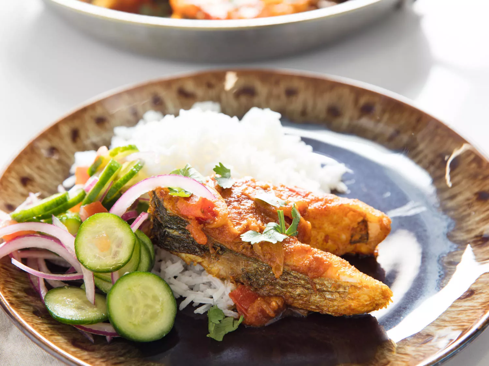

Fish Bhuna

Description
Bhuna is the term used for a thick and paste-like South Asian curry. In this fish bhuna, dorade steaks are seasoned with bright turmeric and fruity Kashmiri red chile powder before they're fried, then tossed in a spicy and tangy onion and tomato curry. It's great served alongside rice and a simple cucumber salad for a change of pace from your usual fish dinner.
Ingredients
- 2 small whole head-on dorade or other flavorful white-fleshed fish, cleaned (about 3 pounds total once cleaned; 1.4kg);
- 2 teaspoons (8g) Diamond Crystal kosher salt, plus more to taste
- 2 teaspoons (4g) ground turmeric
- 3 teaspoons (6g) Kashmiri red chile powder (or 1 teaspoon cayenne pepper), divided
- Neutral oil, such as canola, safflower, or peanut, for frying
- 1 medium yellow onion, thinly sliced (about 10 1/2 ounces; 300g)
- One 2-inch piece ginger, peeled and grated (about 15g)
- 1 bay leaf
- 1 tablespoon (8g) ground cumin
- 2 teaspoons (4g) ground coriander
- 1 1/2 cups cored and diced skin-on fresh tomatoes (12 ounces; 340g), from about 3 small tomatoes
- 1 tablespoon (15g) distilled white vinegar
- Freshly ground black pepper
- Chopped fresh cilantro leaves and tender stems, for garnish
Steps
- Remove heads from fish and cut bodies into 1-inch-thick steaks (or ask your fishmonger to do this for you; see note). In a small bowl, combine kosher salt, turmeric, and 2 teaspoons (4g) Kashmiri red chili powder. Sprinkle salt mixture all over fish.
- Add enough oil to a large sauté pan to fill it 1/4 inch deep and heat over high heat until shimmering. Working in batches if needed, add seasoned fish steaks and cook until browned on both sides, about 10 minutes. Using a slotted spatula, transfer cooked steaks to a plate, tray, or dish and set aside.
- Drain off all but 2 tablespoons oil from sauté pan. Continuing to work over high heat, add onion and cook until browned in spots, about 5 minutes; lower heat at any point if onion threatens to burn.
- Lower heat to medium and add ginger, bay leaf, remaining 1 teaspoon (2g) chili powder, cumin, and coriander, cooking until the spices bloom, about 3 minutes. Add diced tomatoes and cook until some of the liquid has cooked off and you have a thick, paste-like curry, about 5 minutes. Finish the gravy with vinegar and season with salt and pepper to taste.
- Nestle the fried fish steaks into the curry, gently tossing to coat in the sauce. Garnish with chopped cilantro and serve.